aWas meinen Sie? Wer ist wer? Sehen Sie die Fotos und die Visitenkarten an.
■ Das ist Markus Bäuerlein. ▲ Ja, das glaube ich auch. ● Nein, ich glaube, das ist ...
bHören Sie und ordnen Sie zu.
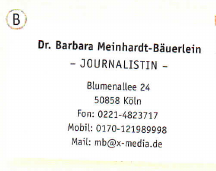
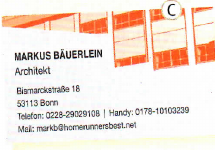
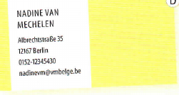
Modul 113
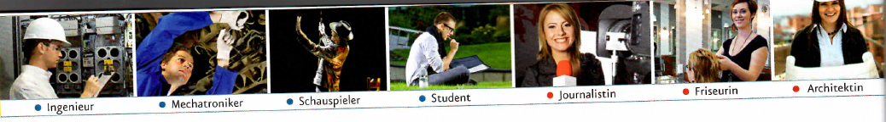
2Ich arbeite als Journalistin.
aHören Sie und ordnen Sie zu.
Ich bin ... Ich arbeite als ... bei ...
bWas machen Sie? Was sind Sie von Beruf? Schreiben Sie Kärtchen und machen Sie ein Plakat. Hilfe finden Sie im Bildlexikon oder im Wörterbuch.
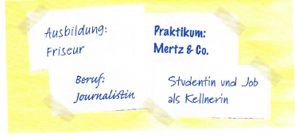
♂
♀
Historiker
Historikerin
Journalist
Journalistin
Student
Studentin
Arzt
Ärztin
cSuchen Sie im Kurs. Wer hat die Kärtchen geschrieben?
■ Carmen, was machst du beruflich? ● Ich mache eine Ausbildung als Friseurin.
Was machen Sie / machst du beruflich? Was sind Sie / bist du von Beruf?
Ich bin ... / Ich arbeite als ... Ich bin Studentin/Schülerin. Ich mache ein Praktikum bei ... / als ... Ich mache eine Ausbildung bei ... / als ... Ich habe einen Job als ...
arbeiten
haben
ich
arbeite
habe
du
arbeitest
hast
Sie
arbeiten
haben
dSchreiben Sie Ihr Internet-Profil: Arbeiten Sie zu zweit auf Seite 74.
aLesen Sie den Steckbrief und den Text und markieren Sie die Verben.
STECKBRIEF
Vorname:Mette
Familienname:Svendsen
Herkunft:Dänemark
Wohnort:Kopenhagen
Beruf:Studentin / Job als Kellnerin
Alter:24
Familienstand:Single
Kinder:keine Kinder
. . . , .
STECKBRIEF
bUnd Sie? Ergänzen Sie den Steckbrief und schreiben Sie einen Text über sich selbst.
Grammatik
Verb: Konjugation
machen
arbeiten
haben
sein
ich
mache
arbeite
habe
bin
du
machst
arbeitest
hast
bist
er/sie
macht
arbeitet
hat
ist
wir
machen
arbeiten
haben
sind
ihr
macht
arbeitet
habt
seid
sie/Sie
machen
arbeiten
haben
sind
Präpositionen als, bei, in
als
Ich arbeite als Journalistin.
bei
Ich arbeite bei X-Media.
in
Ich lebe in Köln.
Wortbildung -in
der Journalist
die Journalistin
der Arzt
die Ärztin
Negation mit nicht
Wir leben nicht zusammen.
Sie wohnt nicht in Köln.
Kommunikation
über den Beruf sprechen
Was sind Sie / bist du von Beruf? Was machen Sie / machst du beruflich?
Ich bin/arbeite als ... bei ... Ich bin Student/Schüler. Ich habe einen Job als ... Ich mache eine Ausbildung als ... / ein Praktikum bei ...
über Persönliches sprechen
Wo wohnen Sie / wohnst du? – Ich wohne/lebe in ...
Ich bin verheiratet/geschieden/Single. Wir leben zusammen / nicht zusammen. Ich habe ein Kind / zwei, drei ... Kinder / keine Kinder. Wie alt sind Sie / bist du? – Ich bin ... Jahre alt.
Modul 116
1Sehen Sie das Foto an, hören Sie und kreuzen Sie an.
Was glauben Sie?
Vermutung: Hier gibt es keine eindeutige Lösung.
2Was sagt Mark? Hören Sie und kreuzen Sie an.
Modul 117
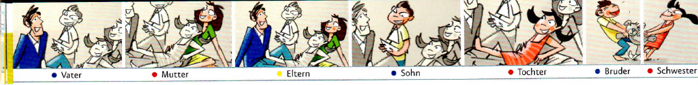
3Ich bin nicht verheiratet.
aLesen Sie den Drehbuch-Ausschnitt und hören Sie noch einmal. Ergänzen Sie dann die Tabelle.
HERBERT:Elvira!
ELVIRA:Wer ist das? Ist das deine Frau?
HERBERT:Nein. Das ist meine Mutter.
ELVIRA:Deine Mutter?! Das ist nicht deine Mutter.
HERBERT:Doch.
ELVIRA:Sie ist nicht sehr alt, hm?
HERBERT:Doch. Sie ist 74.
ELVIRA:Ach Herbert! Ist das deine Frau?
HERBERT:Elvira! Bitte!
ELVIRA:Bist du verheiratet?
HERBERT:Nein, Elvira. Ich bin nicht verheiratet.
ELVIRA:Nein?
bJetzt sind Sie selbst Schauspieler. Spielen Sie ähnliche Dialoge.
1 deine Frau – meine Oma 2 dein Mann – mein Vater 3 dein Mann – mein Opa
■ Wer ist das? Ist das deine Frau? ▲ Nein. Das ist meine Oma. ■ Deine Oma?! ...
4Wer ist das?
aLesen Sie den Text in 3a noch einmal und markieren Sie die Verben. Ergänzen Sie dann.
bWie gut kennen Sie die Personen in Menschen? Arbeiten Sie zu viert auf Seite 76.
bWelche Sprachen sprechen Sie? Hilfe finden Sie auch im Wörterbuch.
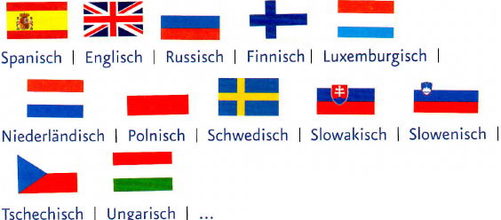
Welche Sprachen sprichst du / sprechen Sie? Ich spreche sehr gut / gut / ein bisschen ...
sprechen
ich
spreche
du
sprichst
er/sie
spricht
cWelche Sprachen sprechen wir? Machen Sie eine Kursstatistik.
Grammatik
Possessivartikel mein/dein
maskulin
feminin
Plural
ich →
mein Bruder
meine Schwester
meine Eltern
du →
dein Bruder
deine Schwester
deine Eltern
Ja-/Nein-Frage, W-Frage und Aussage
Ja-/Nein-Frage
Ist das deine Frau?
W-Frage
Wer ist das?
Aussage
Das ist meine Frau.
ja / nein / doch
Ist das deine Frau?
Ja. / Nein.
Das ist nicht deine Frau?
Doch. / Nein.
Verb sprechen: Konjugation mit Vokalwechsel
ich spreche
wir sprechen
du sprichst
ihr sprecht
er/sie spricht
sie/Sie sprechen
Kommunikation
Familie
Das sind meine Eltern. / Das ist meine Mutter.
Ist Ewa deine Schwester? – Nein, Ewa ist nicht meine Schwester. Ewa ist meine Freundin.
Sprachkenntnisse
Welche Sprachen sprechen Sie / sprichst du? – Ich spreche (sehr gut / gut / ein bisschen) Deutsch und Englisch.
Modul 120
Lesemagazin
DAS BIN ICH.
1 · Paco
Ich heiße Paco Rodriguez. Ich bin 23 Jahre alt und komme aus Mexiko. Ich wohne in München und studiere Biochemie. Ich bin nicht verheiratet und meine Hobbys sind Skaten und Fotografieren. Mein Sternzeichen ist Waage.
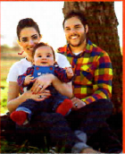
Das ist mein Bruder Miguel. Er ist 31. Er lebt in den USA, in Kalifornien. Er ist Ingenieur und arbeitet bei SunTex in Palo Alto. Miguel ist verheiratet und hat ein Kind. Miguels Frau heißt Patricia. Sie ist 27 und arbeitet als Krankenschwester. Das Baby ist meine Nichte Eliza.
2 · Nicole
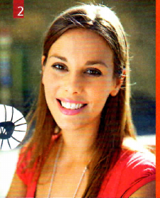
Ich heiße Nicole Moser. Ich bin 22 Jahre alt und komme aus Österreich. Meine Heimatstadt ist Wien. Zurzeit lebe und studiere ich aber in München. Ich bin nicht verheiratet. Meine Hobbys sind Kochen, Musik machen und Singen. Mein Sternzeichen ist Widder.
Das ist mein Bruder Florian. Er ist 24 und lebt zurzeit in Spanien. Er spricht vier Fremdsprachen perfekt: Englisch, Französisch, Spanisch und Italienisch. Florian studiert Business Management in Barcelona. Er ist bald fertig und geht dann zurück nach Österreich.
1Lesen Sie die Texte und korrigieren Sie die Sätze.
2Und Sie? Wer sind Sie? Schreiben Sie über sich und über ein Familienmitglied.
Modul 121
Film-Stationen Clips 1–3
صفحة الفيديو الأصلية. ملفات الفيديو مش موجودة في المصادر اللي وصلت. تقدر تكتب ملاحظاتك، ومش هنبدلها بصوت أو فيديو تاني.
1Guten Tag! Grüß Gott! – Sehen Sie den Film und ordnen Sie zu: Wer sagt was?
2Ich bin Friseurin. – Sehen Sie die Reportage und korrigieren Sie die Steckbriefe.
Steckbrief 1
Steckbrief 2
Familienname: Gencer
Familienname: Nickels
Wohnort: Augsburg → Gilching
Wohnort: Gilching
Beruf: Friseurin
Beruf: Ingenieurin
arbeitet in: Gilching
arbeitet in: München
Alter: 27
Alter: 39
Familienstand: nicht verheiratet, 1 Kind
Familienstand: geschieden
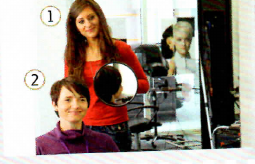
3Das ist meine Familie. – Sehen Sie die Foto-Story und ordnen Sie zu.
Foto 1
Foto 2
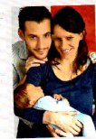
Foto 3
Das ist mein Vater. | Er ist schon 62. | Mein Vater lebt jetzt in New York. | Das ist Aileen. | Sie ist Amerikanerin. | Sie wohnt auch in New York. | Meine Mutter lebt hier in Wien. | Sie ist 57. | Das ist meine Schwester. | Sie heißt Tanja. | Das ist Otto. | Sie sind verheiratet und haben ein Kind. | Sie leben jetzt in Graz.
Modul 122
Projekt Landeskunde
1Lesen Sie den Text und ergänzen Sie den Stammbaum.
Original-Lesetext der Buchausgabe (2012). Keine aktuellen biografischen Angaben. ده نص النسخة القديمة من الكتاب سنة 2012، مش معلومات حالية عن الشخصيات.
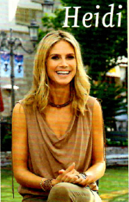
Klum
Heidi Klum ist die Tochter von Erna und Günther Klum und kommt aus Deutschland. Sie ist am 1.6.1973 in Bergisch Gladbach geboren. Heidi Klums Vater ist Chemiefacharbeiter. Jetzt arbeitet er aber als Manager von Heidi Klum. Er ist verheiratet mit Erna Klum. Erna Klum ist von Beruf Friseurin, aber sie arbeitet nicht mehr. Heidi Klum ist Model und Moderatorin. In Deutschland moderiert sie die Show Germany’s Next Topmodel. Seit 2005 ist Heidi Klum mit Seal verheiratet. Seal ist von Beruf Sänger und kommt aus London. Heidi Klum hat vier Kinder. Sie heißen Leni, Henry, Johan und Lou. Die Familie wohnt zurzeit in den USA.
2Prominente aus den deutschsprachigen Ländern
aWählen Sie eine bekannte Person und suchen Sie Informationen zu Familie und Beruf im Internet. Machen Sie ein Poster mit einem Stammbaum wie in 1.
bPräsentieren Sie Ihre Ergebnisse im Kurs.
Meine Person heißt ... Sie/Er kommt aus ... und ist ... Die Eltern heißen ... Der Vater / Die Mutter arbeitet als ... ... ist verheiratet/geschieden/... ... und ... haben ... Kinder. Sie wohnen in ...
Modul 123
Ausklang
1Hören Sie das Lied und suchen Sie die Städte auf der Karte.
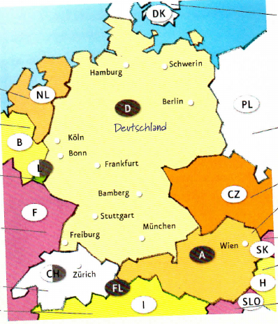
Wo wohnt Winfried?
deutschsprachig deutsch- und nichtdeutschsprachig nicht deutschsprachig
2Winfried wohnt in ...
aErinnern Sie sich an die Menschen in den ersten drei Lektionen? Wer ist wer? Ergänzen Sie die Namen.
bWo wohnt Winfried? Suchen Sie die passenden Buchstaben in 2a.